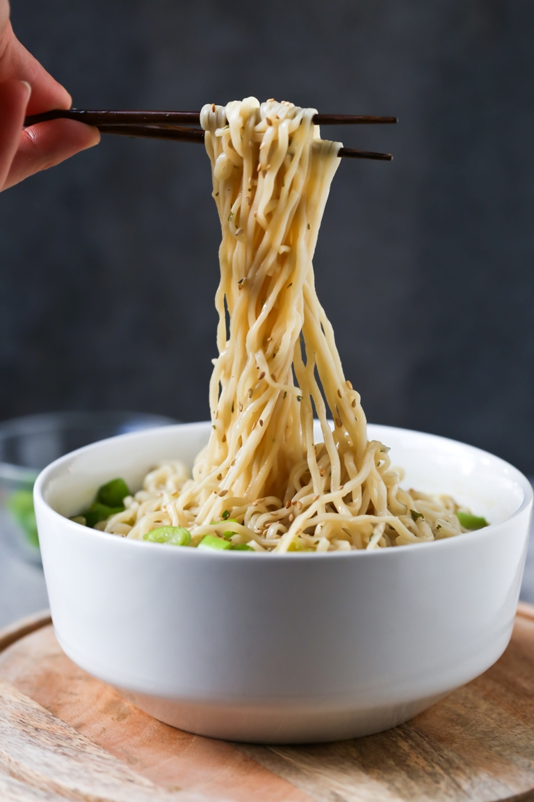

Ramen noodles

Ramen is a quick and easy meal that could often be used for lunch but don't let that stop you from having it for dinner! with these quick and easy steps you'll be eating ramen in just 3 minutes
What will I be needing?
- a package of instant ramen
- a pot to cook your ramen in
Well that seems easy, but how do I make it?
- Put your pot onto the stove with water to boil
- Once the water is boiling add your noodles from the instant ramen pack
- Cook for 3 minutes stirring occasionally
- Once its done cooking you will decide how much water you want in your meal, you can pour some out into the sink or leave it all in
- Add the seasoning packet from your instant ramen and mix well
- Enjoy!
Was this recipe everything you were hoping it'd be? Try returning home and try another one of our recipes!